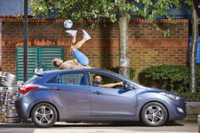

most recent (31.10.24.):


a new guy has achived a record!
Previously:
Verdens største pizza

Den største pizzaen måler 1 296,72 m² og ble oppnådd av Airrack i Los Angeles, California, USA, den 19.
januar 2023. Ingrediensene til denne pizzaen inkluderte 6 193 kilogram deig, 2 244 kilogram pizzasaus, 3 992 kilogram ost og omtrent 630 496 pepperoniskiver.
Balansere ball
